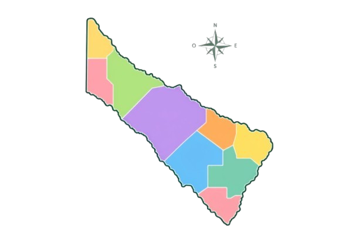

Explorá Formosa
Hacé clic en los puntos violetas para descubrir lugares, naturaleza y cultura de la provincia.

RAMÓN LISTA
MATACOS
BERMEJO
PATIÑO
PILAGÁS
PILCOMAYO
FORMOSA
PIRANÉ
LAISHÍ
Lugar interactivo
Departamento
⭐ Dato curioso
🧠 ¿Qué aprendiste?
¿Qué tipo de ambiente es el Bañado La Estrella?